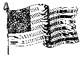

Our Flag Is There

Our Flag is there, our Flag is there,
It proudly waves o'er Sumpter's walls,
And noble men they truly are
Who dare to die before it falls.
God save that gallant little band
And give them strength that flag to save,
So long as Sumpter's walls shall stand
May traitor's flag n'er o'er it wave
Our Flag is there, Our Flag is there,
Let Freedom shout their loud huzzahs,
And may no traitor ever dare
To lower our bright Stripes and Stars.
May Freedom's Flag forever wave,
Though traitors view it with disdain;
And may they find an early grave
Who fire on that Flag again.
Brave Anderson has nobly stood
Defender of his Country's cause,
And every patriot will applaud
That noble band with loud huzzahs
For we are proud our Flag is there
Long may it wave in Freedom's wars.
Our Flag is there, our Flag is there,
Behold its glorious Stripes and Stars.
Our Flag is there, our Flag is there,
It proudly waves from sea to sea,
The slaves their chains no longer wear
But sing the song of Liberty
That glorious Flag in triumph waves,
Respected by all foreign powers,
When traitors find deserved graves
A glorious destiny is ours.
Our Flag is there, our Flag is there,
We fought that glorious Flag to save
Our Flag is there, our Flag is there
O'er Sumpter evermore to wave.
The last stanza was written at Raleigh, N.C., after the rebels left Ft. Sumpter.
From: War Songs Poems and Odes by R.W. Burt
Peoria Illinois 1909